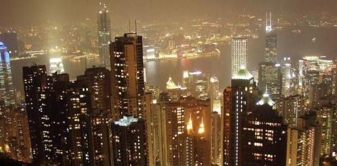
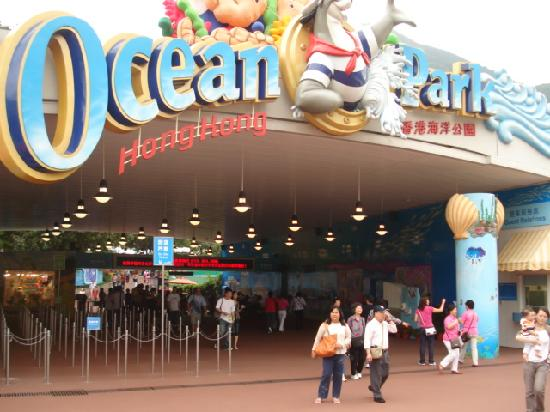
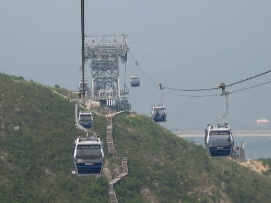
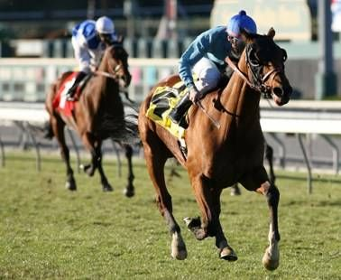

Victoria Peak
People are flocking towards the Hong Kong Victoria Peak. One of the most popular tourist attractions in Hong Kong. The full name of this view point is Victoria Peak and it is sure to be high up on your list of must see Hong Kong attractions!
Since the opening of the Tramway back in 1888, the popularity of Victoria Peak in Hong Kong has continued to grow. Currently it hosts more than 6 million visitors each year. The Tram ride alone is spectacularly breathtaking, whether you are going up or coming down. At the end of this seven minute journey you can expect to have the penultimate view of the city of Hong Kong.
{kind=link}
Disneyland
Welcome to the fifth Disneyland on the planet - the Hong Kong Disneyland opened to visitors on September 12, 2005. Hong Kong is one of the most popular cities for travelers to China and Disney took advantage of this fact by adding a new spectacular Hong Kong attractions, a new Disneyland building venue with a total capacity of 34,000 people.
The park features the most popular rides and adventures as found in the U.S. Disneyland:
Mickey's PhilharMagic, The Many Adventures of Winnie the Pooh, The Golden Mickeys at Disney's Storybook Theater,
Hong Kong Disneyland Railroad, Buzz Lightyear Astro Blasters, Dumbo the Flying Elephant, Pink Snow White Castle, Space Mountain, Mad Hatter Tea Cups,
Cinderella Carousel, Broadway-style show "Festival of the Lion King", Tarzan Island, Stitch Encounter, the Jungle River Cruise, Autopia, Orbitron and of course, the daily parades with Disney characters on Main Street.

Ocean Park
It is possible to spend an entire day here if you aim to take in all the park's stunning features and numerous recreation activities. The sheer variety of entertainment, education and conservation facilities will cater to the entire family and your experience will remain in your memory to love, enjoy and cherish for the rest of your life.
With numerous restaurants and food kiosks, it offers a large choice of refreshments and snacks within the park premises. There are also many shops with an exciting variety of souvenirs and special gifts.
{kind=link}
Ngong Ping 360
Immerse yourself for the next 25 minutes @ 5.7 km. Hong Kong Ngong Ping 360 offers a journey of 360 degree spectacular panoramic views. This ride is from Tung Chung Town Centre down to Ngong Ping, Lantau Island. Encompassing bird's eye views of the South China Sea and Tung Chung Bay, Scenic Mountains, the Hong Kong International Airport, the whole North Lantau Country Park and introducing the Ngong Ping Village where you can visit the Tian Tan Buddha Statue and Monkey's Tale Theater.
This World-Class Tourist Attraction was officially opened to public on September 18, 2006. For safety and reliability, the HongKongNgong Ping 360 cable car utilizes the bi-cable rope technology which has less environmental impact and offers a very smooth gliding transit.
A total of 17 persons are allowed in a single cabin car with only 10 sitting capacity, the rest will be standing. This very unique attraction is operating from 10:00am to 6:00pm on weekdays, 10:00am to 6:30pm on weekends and from 9:00am to 6:30pm on Special Holidays.
{kind=link}
Hong Kong horse racing
Started on December 1946 - The Hong Kong horse racing has become one of the most popular Hong Kong attractions. It is talked about throughout the world and a highlight of the city. Whether you are looking for a day of recreation, or want to enjoy some heart-stopping action courtesy of the Hong Kong Jockey Club the Sha Tin or Happy Valley Racecourse is the place to go.
Immerse yourself in the live action, electric atmosphere and bustle of a huge crowd. Over 2 million race goers visit the two racecourses, Happy Valley and Sha Tin each year hoping to share in some of the richest purses in the world of world-class racing.
{kind=link}
Source:http://www.travel-hongkong-attractions.com/